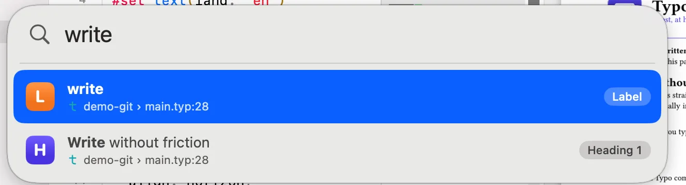
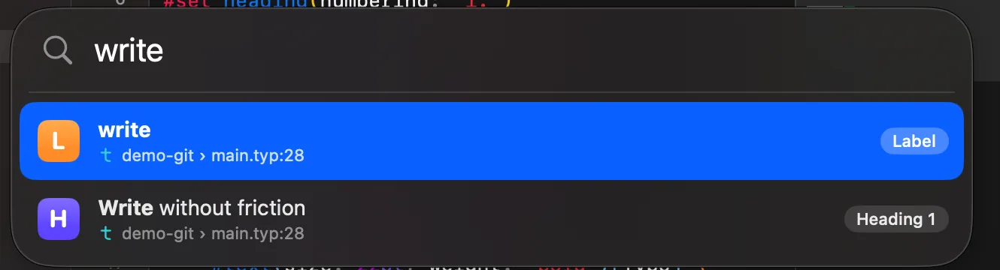
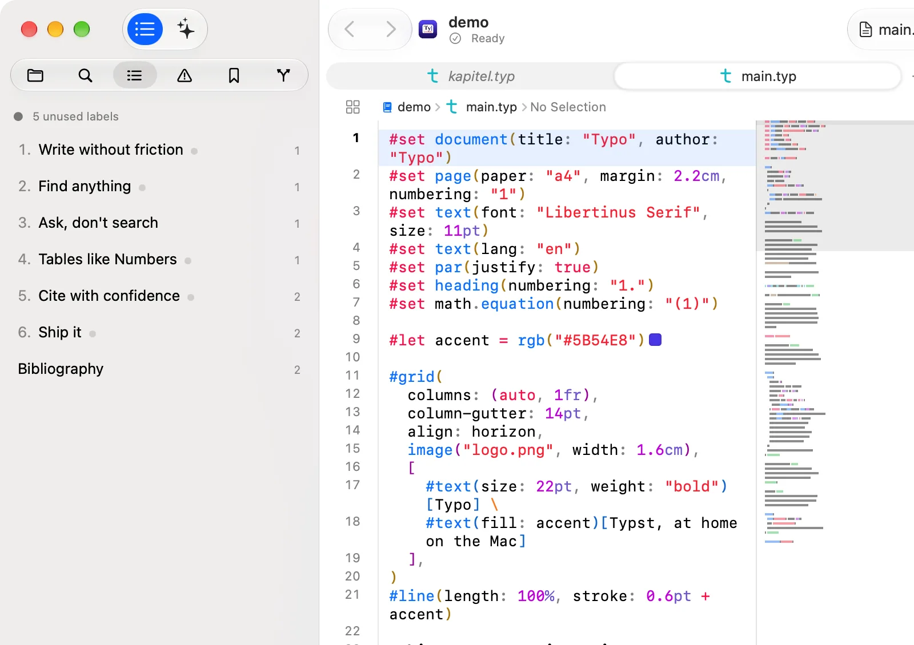
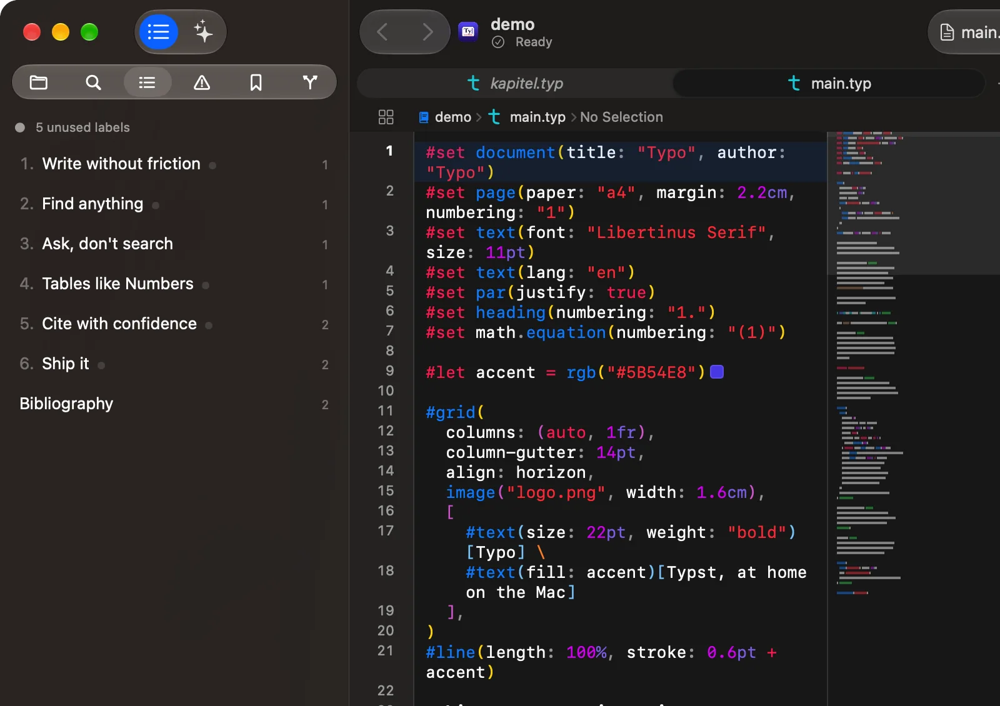

Navigating
This page shows how to move around a project: files, headings, definitions and issues.
Open Quickly and Go to Line
Navigate › Open Quickly… (⇧⌘O) finds a file, heading, label, function, variable, bibliography entry or Typst function from a few of its letters. To open a file at a line, type name:line.
Navigate › Go to Line… (⌘L) moves the caret to a line. Type 42 for a line, 42:7 for a line and column, or +10 and -10 relative to the current line.


The navigators
The sidebar has six navigators. Switch with Navigate › Show … Navigator or the shortcuts below.
- Files (⌘1): the file tree, with a filter bar. A file can open in a new tab.
- Search (⌘2): find and replace in the project, see below.
- Outline (⌘3): the headings of the document.
- Issues (⌘4): errors and warnings, with a badge on the tab.
- Bookmarks (⌘5): your bookmarked lines and files.
- Changes (⌘6): Git changes, see History. It is hidden when source control is off in the settings.


Find and replace in the project
In the Search navigator, type a query to list the matches in all files, grouped by file. Choose Find or Replace in the pop-up at the top of the navigator. In Replace mode each row shows a preview of the change, and you can use Replace or Replace All. The search options include a regular-expression mode.
Bookmarks
- Navigate › Toggle Bookmark (⌥⌘B) bookmarks the caret line, or removes it.
- Navigate › Add File Bookmark bookmarks a whole file. It follows renames.
- Navigate › Next Bookmark (⌃⌘↓) and Navigate › Previous Bookmark (⌃⌘↑) jump between them, across files.
Definitions, references and renaming
- Navigate › Jump to Definition (⌃⌘J) goes from a reference, variable, function or import to where it is defined.
- Navigate › Find References (⌃⌘R) lists every use of the label, variable or function under the caret across the project.
- Navigate › Rename Symbol… (⌃⌘E) renames a label, variable or function everywhere it is used.
Navigate › Go Back (⌃⌘←) and Navigate › Go Forward (⌃⌘→) move through the places you visited.
Quick fixes
Put the caret on an issue and choose Navigate › Show Quick Fixes (⌘.). Typo offers fixes such as a similar label or name, a missing import, a nearby file, an installed font instead of a missing one, or an update for a package import.
Tabs, split editor and focus mode
- File › New Tab… (⌘T) opens Open Quickly to show a file in a new tab. Window › Show Next Tab (⇧⌘]) and Window › Show Previous Tab (⇧⌘[) switch tabs. The tab bar appears from two tabs.
- View › Split Editor (⌃⌘T) shows a second editor pane with its own tabs.
- View › Focus Mode (⇧⌘Return) hides the sidebar, preview and second pane and centres the text.
- View › Show Inspector (⌥⌘0) shows details about the figure, table, colour, label or function call under the caret.
- View › Bottom Area (⇧⌘Y) shows or hides the bottom bar with the issues.
The command palette, View › Command Palette… (⇧⌘P), finds and runs any menu command.